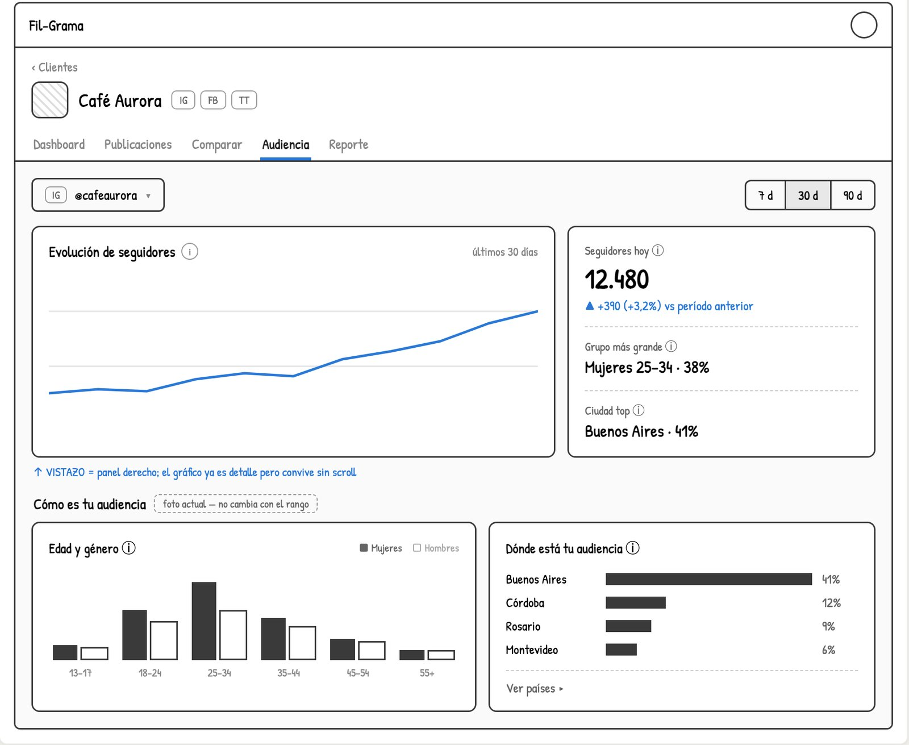
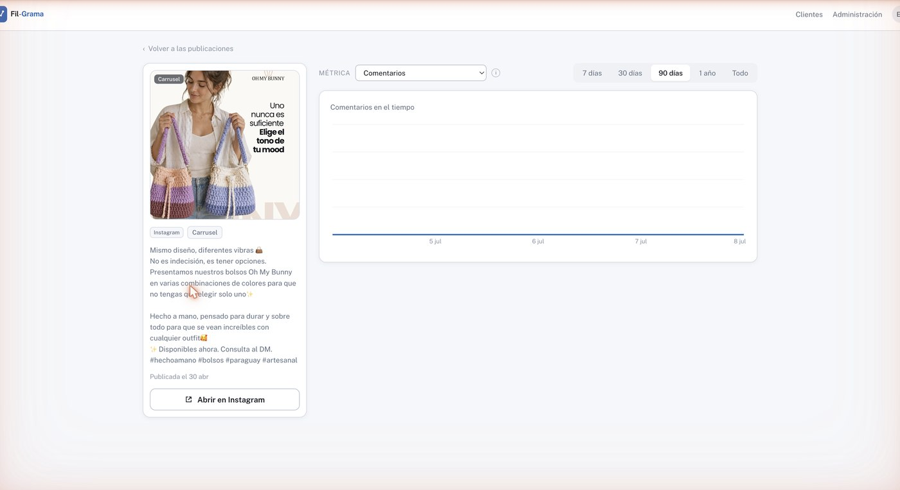
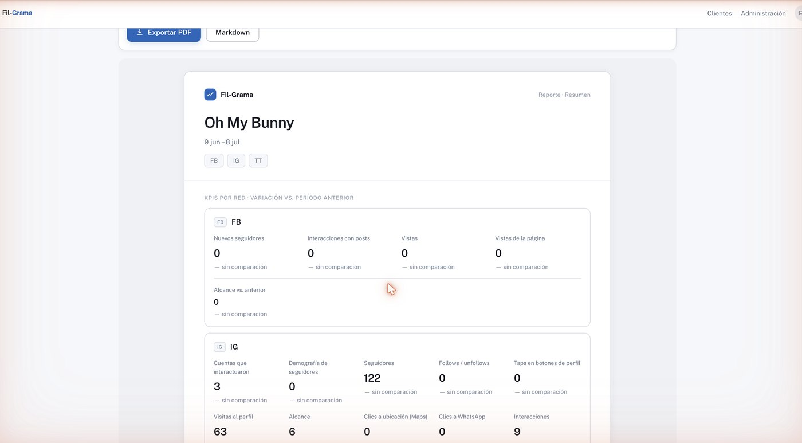

Fil-Grama
Analytics de redes sociales para agencias — Instagram, Facebook y TikTok en un solo lugar.
Las APIs de las redes no exponen series históricas completas: cada una da una ventana limitada de datos. Fil-Grama corre un job diario que consulta las cuentas conectadas de cada cliente y guarda snapshots de métricas en su propia base — como una impresora de línea que registra todo, día a día, en papel continuo. Con esa historia arma dashboards por cliente, comparación entre cuentas y reportes en PDF.
Definí el modelo de datos y la arquitectura, diseñé la interfaz completa del wireframe a la alta fidelidad, implementé backend y frontend, hice las integraciones con TikTok y Meta, armé la infraestructura y hago los despliegues.
01Por qué existe Fil-Grama
Una agencia que gestiona redes de varios clientes necesita comparar rendimiento entre cuentas y en el tiempo, pero Instagram, Facebook y TikTok no ofrecen historiales largos: cada API expone una ventana limitada. Sin una captura propia y constante, esa historia se pierde.
Fil-Grama la captura con un job diario que guarda snapshots de métricas (alcance, seguidores, interacciones, engagement) en su propia base de datos, y con esa historia arma dashboards por cliente, comparación entre cuentas y reportes en PDF.
02Backend modular, contrato de API como fuente de verdad
Backend en Java con Spring Boot, separado en módulos por dominio (auth, clientes, cuentas, OAuth, integración Meta, métricas, sincronización, reportes, media, storage). PostgreSQL con migraciones versionadas. El frontend en React consume el contrato de API con un cliente generado automáticamente (Orval), para que backend y frontend no se desincronicen.
Rotación de refresh tokens
Si un refresh token robado se reusa, se detecta y se revoca toda su familia — no solo ese token.
Modelo de datos — núcleo
14 tablas en el esquema; este es el núcleo relevante para el dashboard y el job diario.
03Detalles concretos del backend
- 001167+ testsIncluye e2e con Testcontainers contra un Postgres real, no solo mocks.
- 002Refresh tokens con rotaciónSi un token robado se reusa, se detecta y se revoca toda la familia, no solo ese token.
- 003Tokens OAuth cifrados en reposoAES-GCM; nunca se guardan ni se exponen en texto plano.
- 004Errores en RFC 7807Un único exception handler;
problem+jsonconsistente en toda la API. - 005Multi-tenant desde el modelo14 tablas con
client_id, pensado para escalar a SaaS sin reescritura.
04TikTok y Meta, con su estado real
Integraciones implementadas en modo sandbox; la aprobación de las APIs de métricas de Meta está en proceso. Cuento el estado tal cual está, sin inflar: esto es un producto en construcción.
OAuth de punta a punta con PKCE, refresh de token con rotación y flujo de conexión con QR de marca. Es la integración más madura: la única probada completa, desde autorización hasta lectura de métricas. La API de publicación requiere una auditoría aparte de TikTok, todavía no habilitada.
Implementada en código (OAuth, lectura de métricas), pero Meta exige App Review con Advanced Access y verificación de negocio antes de habilitarla con cuentas de clientes reales. Hoy funciona en modo Development, solo con cuentas propias de prueba, mientras avanza la aprobación.
05En desarrollo activo, camino a SaaS
Fil-Grama todavía no tiene clientes reales operando en producción: el foco está en dejar bien resuelta la base — arquitectura, integraciones, infraestructura — antes de sumar usuarios. El próximo hito importante es la integración de Meta habilitada por completo.
- [x]Backend y frontend desplegados — VPS en Vultr + Cloudflare Pages, funcionando.
- [x]TikTok integrado — OAuth y lectura de métricas en sandbox.
- [~]Meta en revisión — App Review y verificación de negocio en proceso.
- [~]Reportes automáticos — generación en PDF por cliente y rango de fechas.
- [ ]Publicación de contenido — pendiente de la auditoría de la API de TikTok.
- [ ]SaaS multi-tenant — evolucionar de herramienta interna a producto.
06Cómo está desplegado
Alquilé el servidor, hice las conexiones y desplegué las dos partes del sistema: backend en un VPS de Vultr, con Docker Compose detrás de Caddy como proxy y PostgreSQL, y frontend en Cloudflare Pages, con despliegue automático en cada push a la rama principal.
Para desarrollo uso un túnel de Cloudflare hacia el backend local: pruebo contra un dominio real sin exponer la máquina de desarrollo. Por seguridad, esta página no incluye IPs, credenciales, tokens ni URLs internas.
07Los flujos y pantallas, navegables
Una selección curada de las 50 pantallas diseñadas: analítica, comparación de cuentas, publicaciones, reportes y plataforma. Cada una se abre interactiva, tal como fue diseñada, en escritorio y móvil.
Del wireframe a la alta fidelidad
La misma pantalla (Audiencia): estructura primero, identidad visual después.


08Capturas reales de la plataforma funcionando
La app corriendo en producción, no mockups: dashboard por cliente, detalle de una publicación, comparación entre cuentas y el generador de reportes exportable a PDF.




Capturas tomadas sobre Oh My Bunny — mi propio emprendimiento, que uso como cuenta de prueba en producción mientras avanza la aprobación de Meta. Los números son bajos porque es una cuenta real recién conectada, no una demo con datos inflados.
09Inventario de tecnologías
Backend
- Java · Spring Boot
- APIs REST · JWT
Datos
- PostgreSQL · Flyway
- Modelado relacional
Frontend
- React 19 · TypeScript
- Vite · TanStack Query
Integraciones
- OAuth 2.0 · PKCE
- TikTok API · Meta Graph API
Infraestructura
- Vultr VPS · Docker Compose
- Caddy · Cloudflare Pages · R2
IA
- Servidor MCP embebido
- Tools de solo lectura sobre reportes